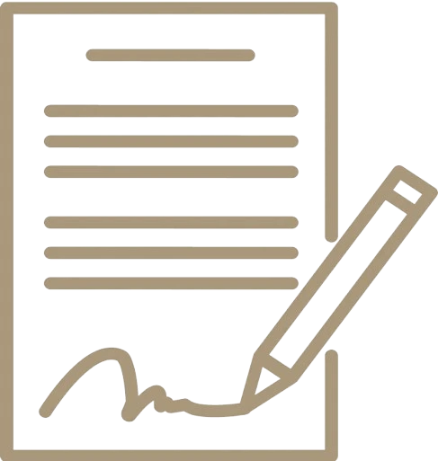

NOS SERVICES
À Valbonne, nos spécialistes redonnent éclat et propreté à vos vitres grâce à un nettoyage précis et efficace. Traces, poussières et salissures disparaissent pour laisser place à des surfaces claires et lumineuses. Offrez plus de confort et de luminosité à vos intérieurs et locaux professionnels.
CONTACTEZ - NOUSUn chantier vient de s’achever à Valbonne ? Nous assurons la remise en état complète : élimination des gravats, dépoussiérage et nettoyage approfondi. Vous retrouvez un lieu sain, propre et directement prêt à l’emploi.
CONTACTEZ - NOUSÀ Valbonne, nous entretenons vos copropriétés avec rigueur : halls, cages d’escaliers, couloirs et ascenseurs. Nos interventions régulières garantissent hygiène, propreté et confort pour les résidents.
CONTACTEZ - NOUSNettoyage de vitres professionnel : Notre entreprise de nettoyage à Valbonne intervient sur toutes vos surfaces vitrées : fenêtres, vitrines, baies vitrées et vérandas. Nous assurons un résultat impeccable et durable, sans traces ni marques.
Nettoyage de fin de chantier : Après vos travaux à Valbonne, nous réalisons un nettoyage approfondi pour rendre vos espaces accueillants et fonctionnels. Résidus, taches et poussières sont éliminés pour un résultat soigné.
Nettoyage de copropriété : Nos services à Valbonne incluent l’entretien complet des parties communes : halls, escaliers, ascenseurs, parkings. Avec Entreprise de nettoyage Valbonne, vos résidences bénéficient d’un suivi régulier et rigoureux.
UNE ÉQUIPE QUALIFIÉE À VALBONNE
Notre entreprise à Valbonne s’appuie sur une équipe expérimentée et des équipements performants. Nous réalisons tous types de prestations : lavage de vitres, après travaux et entretien de copropriétés. Chaque intervention est effectuée avec sérieux et professionnalisme.
DES TARIFS
TRANSPARENTS ET COMPÉTITIFS
Nos services de nettoyage à Valbonne sont pensés pour s’adapter à vos besoins et à votre budget. Particuliers, syndics et professionnels peuvent bénéficier de formules personnalisées. Demandez dès aujourd’hui votre devis gratuit.
DEVIS GRATUITPOURQUOI NOUS CHOISIR À VALBONNE ?
Choisir notre société de nettoyage à Valbonne, c’est opter pour un service réactif, fiable et reconnu. Nous proposons des prestations variées : nettoyage de vitres, fin de chantier, copropriétés, toujours réalisées avec soin.
DES FORMULES FLEXIBLES POUR CHAQUE CLIENT
INTERVENTIONS OCCASIONNELLES
CONTRATS RÉGULIERS
Nous proposons à Valbonne des solutions souples : nettoyage ponctuel ou entretien programmé. Avec Entreprise de nettoyage Valbonne, vous bénéficiez d’un service fiable et adapté à vos besoins.
UN PARTENAIRE LOCAL DISPONIBLE 7J/7
Présente à Valbonne, notre société intervient aussi bien auprès des particuliers que des professionnels. Nos services garantissent propreté, hygiène et satisfaction.
Nos prestations incluent : nettoyage de vitres, après travaux, copropriétés. Chaque intervention est réalisée dans le respect des règles d’hygiène et de sécurité.
Disponible 7j/7, notre entreprise de nettoyage à Valbonne vous assure réactivité et professionnalisme.